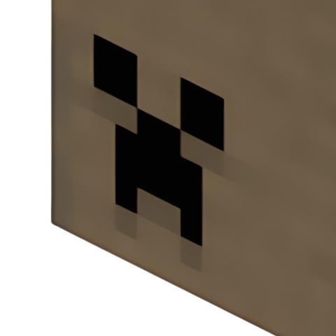

这是歪瞳开发的Minecraft实用工具。专门用于计算末地要塞的精确坐标。
玩家只需要输入两次扔末影之眼的位置和落点，算法就能算出要塞在哪里。
不需要输入locate指令，也不需要开作弊模式。
支持网页版直接使用，手机和电脑都能打开。
关键词：minecraft末地传送门查找器, 要塞定位器, 末影之眼计算器, minecraft传送门坐标, 末地要塞怎么找, 不用指令找要塞, 两点定位法, 末影之眼往地下飞怎么办。
Minecraft 末地要塞定位计算器（两点式直线法）
通过两次末影之眼投掷的玩家站位和落点坐标连成的直线，来计算要塞位置。
利用末影之眼指向机制，通过两次投掷坐标，以几何算法精准计算要塞位置，助你高效探索。适合末地较大、要塞分布较稀疏的情况。需要两次投掷，且两次投掷的起点距离越远，定位结果越准确。

本页面开发者: 2025_XiaoTangcai
本站职位: 站长兼开发者
开发者主页: mcmod.cn[当前所在页面 Minecraft末地要塞定位计算器-你好,歪瞳 版本0.4.2a]
[2026.3.1-20:10:56]Admin在tools.mcms.qzz.io创建了/et路由，当前版本0.0.1a
[2026.3.4-10:30:43]2025_XiaoTangcai加入了站点名片，当前版本0.4.1a
[2026.3.4-10:32:06]更新日志:修复了一些已知bug，当前版本0.4.1a
[2026.3.4-11:42:13]更新日志:修复了一些已知bug，当前版本0.4.1b
[2026.3.4-12:27:20]更新日志:修复了一些已知bug，当前版本0.4.1c
[2026.3.4-15:31:43]更新日志:修复了一些已知bug，当前版本0.4.2a
[2026.3.7-21:41:43]更新日志:修复了一些已知bug，当前版本0.4.3a
什么是Minecraft末地传送门查找及其重要性？
Minecraft末地传送门查找是定位包含末地传送门的要塞的过程。末地传送门是通往末地维度、挑战末影龙和进入游戏后期内容的关键。该过程依赖于末影之眼的特殊行为，这些行为可通过数学分析来确定传送门位置。
末地传送门位置的战略意义
找到末地传送门对于完成Minecraft主线和进入高级内容至关重要。要塞通常距离出生点数千格，手动探索极为耗时。数学查找方法能节省大量时间，并为高效导航提供精确坐标。这在多人服务器和速通场景中尤为宝贵。
理解末影之眼机制
末影之眼具有独特属性，非常适合定位传送门。投掷时会朝最近的要塞方向飞行，提供方向和距离信息。飞行角度指示传送门方向，飞行距离则反映要塞距离。这些行为遵循可建模的规律。
数学基础与坐标系统
查找传送门依赖三角函数和坐标几何。Minecraft世界采用三维坐标系，X和Z代表水平位置。通过分析多次投掷的角度和距离，玩家可用三角定位法精确锁定要塞位置。这种数学方法比人工探索更精准。
查找应用场景：
- 速通：快速定位传送门以冲击世界纪录
- 多人服务器：高效查找共享世界中的传送门
- 资源管理：节省探索时间和资源
- 战略规划：规划路线，准备进入末地
查找技巧不仅适用于基础要塞定位，也是高阶Minecraft玩法的核心。掌握这些方法可优化游戏体验，在速通和社区中脱颖而出。
速通与竞技玩法
在Minecraft速通中，查找传送门至关重要，每一秒都很宝贵。速通玩家利用精确的数学计算最小化查找时间。进阶技巧包括基于种子分析预判传送门位置，以及多末影之眼同时投掷实现快速三角定位。这些方法可在竞技中节省大量时间。
多人服务器应用
在多人环境中，高效查找传送门更为重要。玩家可协作定位多个要塞，分享坐标，制定进入末地的战略。数学查找方法确保资源分配公平高效。
高级数学方法与工具
除基础三角定位外，高阶玩家还会用复杂数学模型预测要塞位置。这包括世界生成算法、末影之眼行为统计分析和机器学习等。社区工具和计算器不断进化，定位能力日益精准。
进阶应用：
- 种子分析：探索前预判传送门位置
- 统计建模：用概率提升定位精度
- 社区工具：与他人共享和验证传送门坐标
- 自动化系统：开发脚本自动查找传送门
步骤详解：
1. 记录坐标
第一次投掷：记录玩家站位坐标 (x₁, z₁) 和末影珍珠落点坐标 (x₂, z₂)。
第二次投掷：记录玩家站位坐标 (x₃, z₃) 和末影珍珠落点坐标 (x₄, z₄)。
2. 计算直线斜率 (k) 和截距 (b)
将每组点代入直线方程 z = kx + b，解出每条直线的 k 和 b 值。
第一条直线：
k₁ = (z₂ - z₁) / (x₂ - x₁)
b₁ = z₁ - k₁ * x₁
第二条直线：
k₂ = (z₄ - z₃) / (x₄ - x₃)
b₂ = z₃ - k₂ * x₃
3. 计算交点 (要塞坐标)
将两条直线方程联立，解出交点的坐标 (x, z)。
x 坐标公式： x = (b₂ - b₁) / (k₁ - k₂)
z 坐标公式： z = k₁ * x + b₁ (将求得的 x 代入任意一条直线方程即可)
本计算器如有bug请全部当做特性对待，注意：如果计算器的结果显示NaN（即Not a Number），就是你的输入的坐标过于完美导致空间量子坍缩，需要点一下重置。
如果你靠本计算器未找到末地要塞，那很有可能是末影之眼今天心情不好，或者你的运气值需要充值了。请保持微笑，按下 F5，让“特性”再次降临。
由mcms.qzz.io提供
© 2026 All rights reserved by mcms.qzz.io.Code Open Source, Use At Your Own Risk.
MIT License